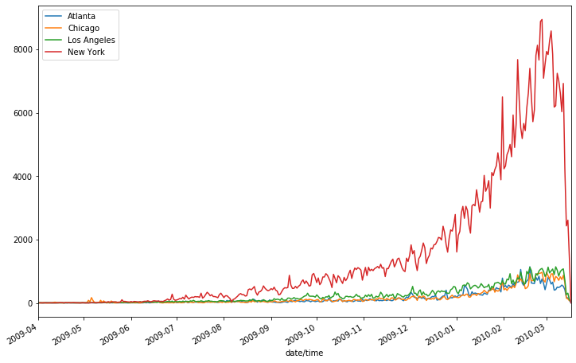
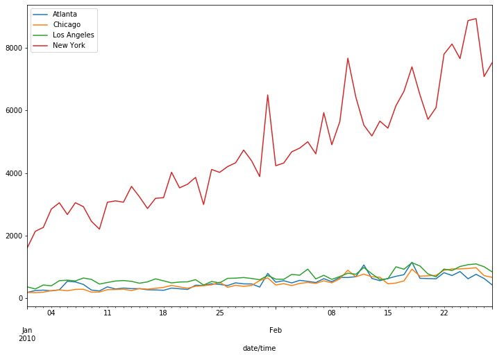
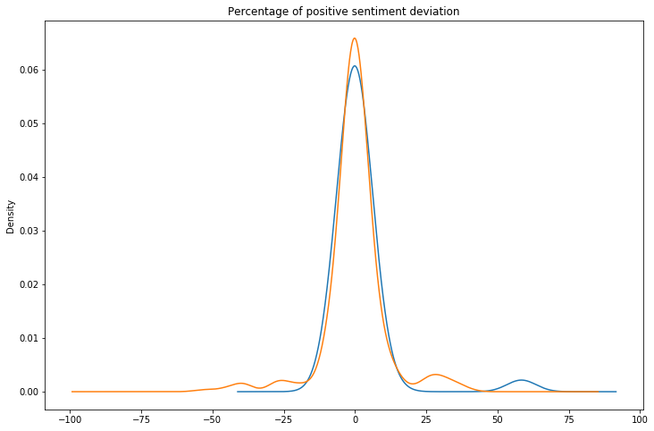
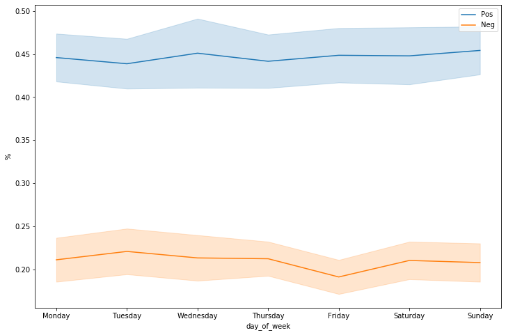

Can sentiment analysis on tweets say if the weather affects our mood?
To answer this question we looked at a dataset of 5 million tweet found on archive.org. We performed sentiment analysis and classified each tweet as positive, negative or neutral. This way, we would’t know how much exactly the weather affects us,but just whether it does. We computed the variation in proportion of positively and negatively classified tweets from day to day. Postulating that the general mood for a given day was influenced by the previous day. Our null hypothesis is that the weather does not affect the mood of people.
Sentiment analysis and score
We first need to take a look at the sentiment analysis score of each tweet to see if the score are satisfactory. We did not obtain the best results but they are still workable.
Gathering the weather forecast
Getting the weather forecast, even though it is possible to do so for every city, the task is a bit tedious so we choose the 5 biggest cities in our dataset representing the 20% of the data points or around a million tweets. We also naively filtered bots by removing the tweets that appeared at zero seconds, it would also take away 1/60 of our data which is negligeable and it doesn’t affect our results, provided that it is a completely random sample. 200 thousand tweets were filtered leaving us with 800 thousand. Graphing the remaining tweets we see that most of them are concentrated in winter 2010. We might have to leave some periods out.
Number of tweets (H3 title):

The first thing we’re going to find is the standard deviation of positive and negative sentiments from one day to another. We expect it to follow a normal distribution centered around zero.
Indeed we find a bell shaped curve.

Weather effect
We want to know if the weather has an effect on this curve, shifting it to the right during good weather and to the left during bad weather. In order to do that a first metric would be to look at rainy days days and plot the new mood standard deviation.
Mood on rainy days:

We do observe a shift, but is it enough to conclude that it was the effect of the weather ?
The t value is not sufficient so we can’t reject the hypothesis that which weather has an effect. But maybe it is not the weather that directly influences the mood but its variation, so we define a metric of changing weather which is the weather value of the day minus the one for the previous day. Instead of looking at every possible variation we will look at extremes ones. Here are the result:
Effect of extreme weather variations:
We find 45 days with sudden weather change. We again observe a shift in the normal distribution. Is it more relevant than before ?
We still can’t reject the null hypothesis.
Is it possible to reduce the variation of other measurable sources, does the sentiment analysis give different results for each day of the week ? And if yes, can we take it into account in our statistical journey. We plot the average sentiment variation on the course of the week:
Tweet sentiment over the course of the week:

The sentiments seems stable during the week so the day is not affecting the sentiments of our dataset
Conclusion
In our journey we haven’t found any significant results to refute our hypothesis. We have to conduct further research. The next step would be to implement a topic modeling algorithm to track the effect of the weather on the topics presence. If we had some better correlation effects we could have implemented a machine learning model to find the weather from the tweets sentiment analysis.